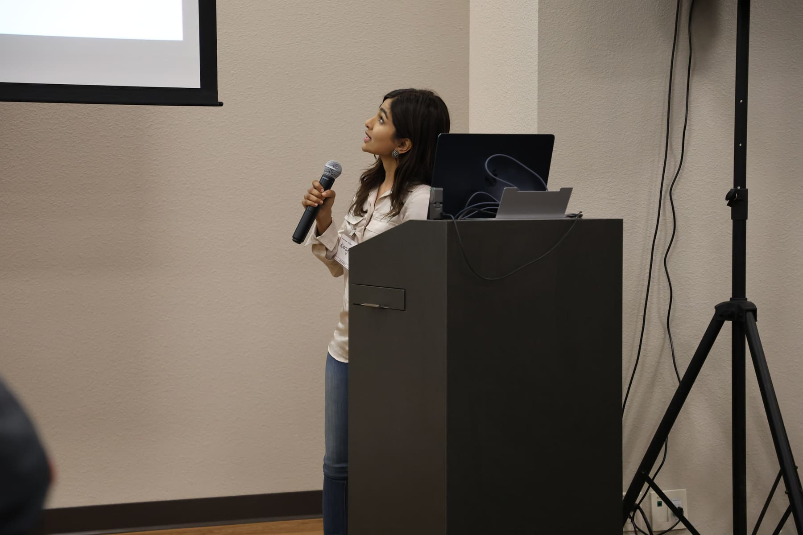

Stanford Founders provided exactly the interdisciplinary environment I needed to find my technical co-founder.

Lukas Klaiber
Former Student Advisor

1,150+ graduate founders across Stanford's seven schools. The shortest path from lab, classroom, or studio to a funded company.
Stanford Founders began as a casual WhatsApp group of ten friends sharing entrepreneurial events, resources, and opportunities across different graduate schools at Stanford.
We noticed the difficulty Stanford graduate students faced in finding cofounders and accessing entrepreneurial resources from other schools. The group aimed to bridge that gap.
The chat grew from 10 to 1,150+ members, highlighting the need for the network. We turned the group into an official student organization, offering programs and events for cross-disciplinary Stanford graduate students at the early stage of their startup development.
Stanford Founders' Club is a dynamic community of cross-disciplinary Stanford graduate students.
We support members at the early stages of company-building through programming, dinners, sector mixers, and introductions across the seven Stanford graduate schools.
Programming, co-founder matching, sector mixers, and investor access for the early stages of company-building.
Firesides with operators who have shipped, from PhD spinouts to GSB-led companies. Workshops on fundraising, recruiting, and first-customer GTM.
Engineers, scientists, and operators meet across the seven schools. Most matches start at a single dinner and end at a Y Combinator interview.
Bio, climate, defense, AI infrastructure, fintech. Small-format dinners with founders working on the same wedge of the market.
Demo Day puts 90 startups in front of 300+ investors in a single afternoon. Direct introductions to partners at Unusual, Pear, NEA, a16z, DCM, and BlackRock.


Demo Day in the spring. Dinners, mixers, and firesides in between.

Four graduate founders on what the community has been for them.
Stanford Founders provided exactly the interdisciplinary environment I needed to find my technical co-founder.
The level of support and resources available within this community is unmatched on campus.

Being part of this organization wasn't just about networking. It was about community.

There is no better place on campus for graduate students to go from idea to funded company.

Stanford has plenty of entrepreneurship infrastructure, including StartX, GSB E-Club, BASES, ASES, STVP, and more. Stanford Founders tries to help early, when graduate students are transitioning from research to startup and seeking a new community.
We value diversity, collaboration, and integrity in all our endeavors, fostering a supportive and dynamic ecosystem that propels entrepreneurial success.
Our community of 1,150+ graduate student founders thrive by collaborating. Stanford Founders connects them with resources, investors, and like-minded co-founders across every school.